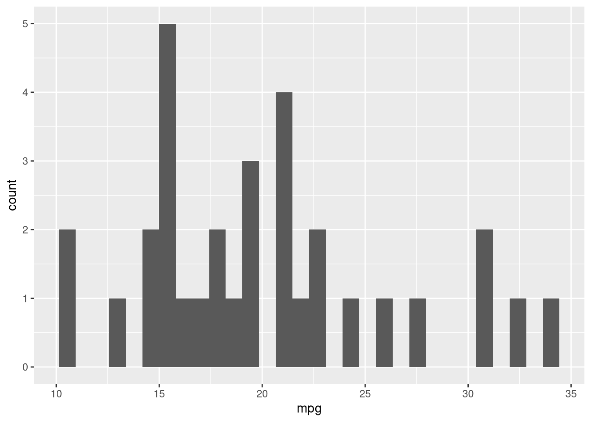
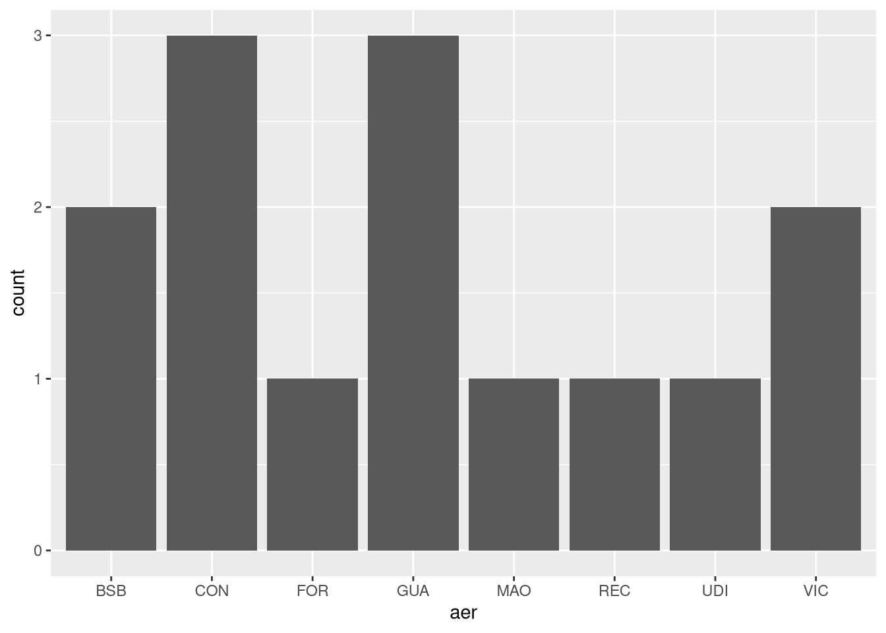
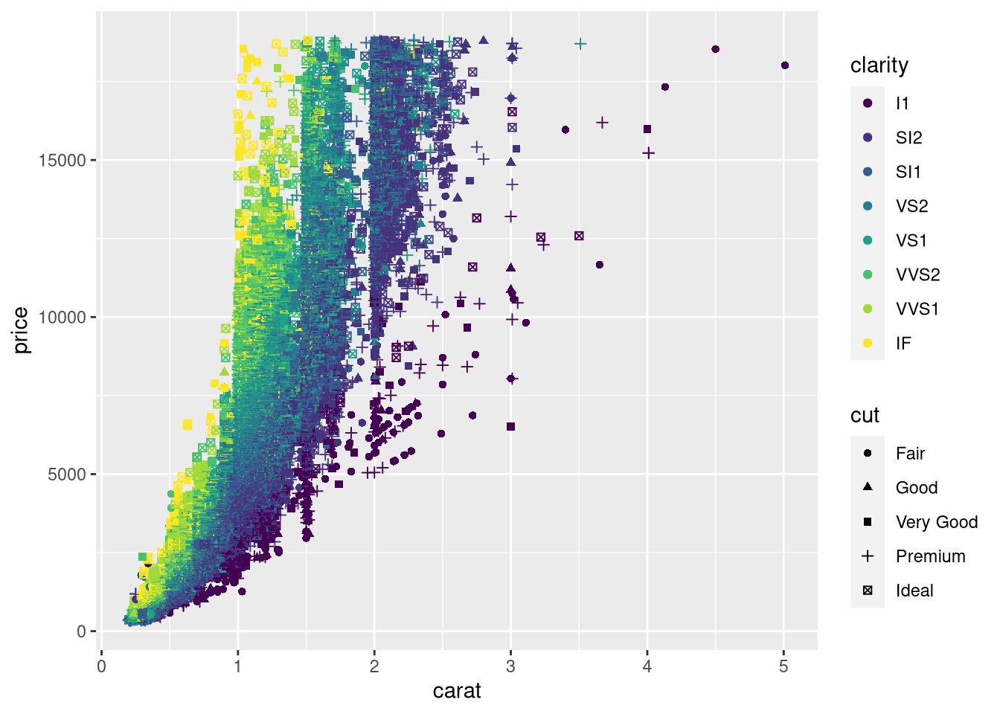

Capítulo 4 Análise de Redes Sociais
O R possui diversos pacotes para análise de rede, como o igraph, ggraph, statnet.
4.1 O pacote Igraph
Instalando o pacote igraph:
install.packages("igraph") # instalando o pacotechamando o pacote já instalado
library(igraph) # chamando o pacote já instalado
##
## Attaching package: 'igraph'
## The following objects are masked from 'package:stats':
##
## decompose, spectrum
## The following object is masked from 'package:base':
##
## unionA partir da ajuda do igraph — no caso, digitando ?igraph.plotting no console do R, e correndo até o final da ajuda — temos alguns exemplos de grafos com o Igraph. Por exemplo, construindo um anel:
g <- make_ring(10)
g$layout <- layout_in_circle
plot(g)
É possível ainda plotar com os comandos tkplot(g) e rglplot(g). Rode no seu console e veja a diferença nos gráficos. Mas vamos a algo mais prático. Pegando o famoso poema de Drummond:
“João amava Teresa que amava Raimundo que amava Maria que amava Joaquim que amava Lili que não amava ninguém”
library(igraph)
g <- graph.empty(directed=TRUE) # "directed" implica distinguir entre "de" e "para" na relação entre os nós.
# Adicionando os vértices.
g <- g + vertex("João")
g <- g + vertex("Teresa")
g <- g + vertex("Raimundo")
g <- g + vertex("Maria")
g <- g + vertex("Joaquim")
g <- g + vertex("Lili")
# Especificando as relações entres os vértices, os edges
g <- g + edges("João", "Teresa")
g <- g + edges("Teresa", "Raimundo")
g <- g + edges("Raimundo", "Maria")
g <- g + edges("Maria", "Joaquim")
g <- g + edges("Joaquim", "Lili")
plot.igraph(g) # plotando o grafo
Neste caso, poderíamos ter feito este mesmo gráfico com código mais compacto:
library(igraph)
g <- graph.empty(directed=TRUE)
# Adicionando os vértices.
g <- g + vertex(c("João", "Teresa", "Raimundo", "Maria", "Joaquim", "Lili"))
# Adicionando os edges em pares
g <- g + edges(c("João", "Teresa", "Teresa", "Raimundo", "Raimundo", "Maria","Maria", "Joaquim","Joaquim", "Lili"))
plot.igraph(g)
Se o grafo sobe ou desce, pouco importa para nós aqui, importa as pessoas e as relações entre elas. Repare que os edges são entendidos aos pares. Se fizéssemos um vetor sem as devidas repetições, teríamos um gráfico errado das relações:
g <- graph.empty(directed=TRUE)
g <- g + vertex(c("João", "Teresa", "Raimundo", "Maria", "Joaquim", "Lili"))
g <- g + edges(c("João", "Teresa", "Raimundo", "Maria","Joaquim", "Lili"))
plot.igraph(g)
4.2 O pacote ggraph
A ser elaborado
4.3 Redes de palavras
A ser elaborado
4.4 Redes de citação
A ser elaborado
4.5 Gráfico de centralidade
A ser elaborado
4.6 Comunidades
A ser elaborado
4.7 Sugestões de links
- Manual online do ipgraph para R; PDF do Manual do igraph para R (ambos em inglês)
- d’ANDRÉA, Carlos Frederico de Brito. Pesquisando plataformas online: conceitos e métodos. EDUFBA. 2020.
- A obra visa introduzir os Estudos de Plataforma, um campo de estudos que, desde o início da década de 2010, discute as especificidades políticas e materiais das mídias sociais e de outras plataformas online. Datificação, algoritmos, governança e os modelos de negócio das plataformas são algumas das dimensões sintetizadas no livro. De modo didático, o autor apresenta um conjunto de leituras e de experimentações metodológicas conduzidas com um diversificado grupo de colaboradoras(es) no país e no exterior. (ebook PDF e Epub gratuitos)
- RECUERO, Raquel. Introdução à análise de redes sociais online. EDUFBA.2017.
- A Análise de Redes Sociais (ARS) é uma abordagem de pesquisa cuja popularidade tem aumentado nos últimos anos, principalmente, entre os pesquisadores da área de Comunicação. É nesse âmbito que várias obras, entre artigos e livros, vêm surgindo e introduzindo o estudo dessas estruturas a partir da análise de redes e da compreensão da representação dessas redes sociais na internet. Este livro é uma pequena compilação dos principais conceitos e elementos para a compreensão e a aplicação da ARS. É baseado em uma breve apresentação e histórico do paradigma, os principais conceitos, suas métricas e, finalmente, suas formas de representação e visualização. (ebook PDF e Epub gratuitos).
- LIZARDO Omar; JILBERT Isaac. Social Networks: An Introduction. 2021. (ebook online)
- AQUINO, Jackson A. “Análise de redes sociais”, capítulo 12 de ___. R para cientistas sociais. Ilhéus, BA: EDITUS, 2014. 157 p. ISBN: 978-85-7455-369-6. (PDF gratuito)